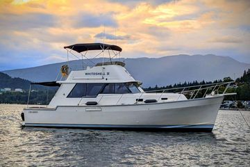

Mainship 34 Diesel Cruiser
1978–1982
The original Mainship 34 is a single-diesel flybridge cruiser built on a solid-fiberglass semi-displacement hull with a full-length keel, wide side decks and a single forward stateroom. Its salon includes a lower helm, and the design emphasizes economical cruising with the ability to run above displacement speed. It launched the Mainship line and became a widely recognized affordable cruising model.

- LOA
- 34′ / 10.36 m
- LWL
- Unknown
- Beam
- 11′ 11″ / 3.63 m
- Draft
- 2′ 10″ / 0.86 m
- Hull behaviour
- Semi-Displacement
- Fuel
- Diesel
- Propulsion
- Shaft
- Engine configuration
- Single inboard diesel
- Boat family
- Trawler
- Construction
- Solid fiberglass hull with balsa-cored foredeck
Best for
- Couples cruising inland and coastal waters
- Buyers seeking an affordable classic diesel cruiser
- Owners comfortable updating late-1970s and early-1980s systems
Trade-offs
- Single-screw docking requires technique or assistance
- Balsa-cored foredeck requires careful moisture inspection
- Older fuel, exhaust, electrical and steering systems may require refit
- Single-cabin layout limits guest privacy
Known concerns
- {'ConcernID': 'MNSH-34-MK1-DECK-CORE', 'System': 'Deck structure', 'Description': 'Moisture intrusion in the balsa-cored foredeck is a documented model concern.', 'AffectedYears': {'From': 1978, 'To': 1982}, 'AffectedVariations': [], 'BuyerQuestion': 'Have moisture readings or foredeck core repairs been documented?', 'InspectionAction': 'Moisture-test the foredeck, especially around hardware and the mast step.', 'OwnerAction': 'Maintain bedding around foredeck penetrations and repair leaks promptly.', 'EvidenceRefs': ['https://www.hmy.com/yachting/powerboat-guide/mainship/34-diesel-cruiser-1978-82'], 'Confidence': 'Moderate'}
Inspection focus
- Moisture-test the balsa-cored foredeck around hardware and the mast step
- Inspect aluminum fuel tanks and access for replacement
- Inspect exhaust, cooling, steering, shaft and rudder systems
- Review electrical upgrades and structural alterations
Continue researching
Related boat models
34 ft · Semi-Displacement
34 ft · Semi-Displacement
34 ft · Semi-Displacement
39.75 ft · Semi-Displacement
39.75 ft · Semi-Displacement
33.08 ft · Semi-Displacement
About this record
B-Atlas preserves uncertainty: missing information remains unknown rather than being treated as a negative. Specifications and guidance describe the model record; individual boats can differ by year, equipment, refit and condition.